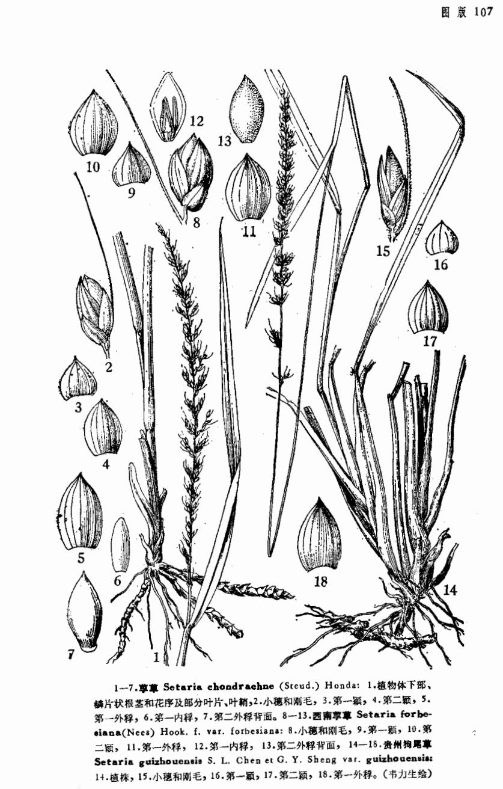

出现篇目
古代记载 《毛诗故训传》
莠，似苗也。（《毛传》注《大田》）
《毛诗正义》
《仲虺之诰》曰：‘若苗之有莠，若粟之有秕。’秕似粟，莠似苗也。（《毛诗正义》疏《大田》）
《诗集传》
莠、似苗。（《诗集传》集注《大田》)
《本草纲目》
时珍曰∶原野垣墙多生之。苗叶似粟而小，其穗亦似粟，黄白色而无实。采茎筒盛，以治目病。恶莠之乱苗，即此也。
当代记载 《中国植物志》
狗尾草（学名：Setaria viridis (L.) Beauv.），一年生。根为须状，高大植株具支持根。秆直立或基部膝曲，高10-100厘米，基部径达3-7毫米。叶鞘松弛，无毛或疏具柔毛或疣毛，边缘具较长的密绵毛状纤毛。花果期5-10月。产全国各地；生于海拔4 000米以下的荒野、道旁，为旱地作物常见的一种杂草。原产欧亚大陆的温带和暖温带地区，现广布于全世界的温带和亚热带地区。

<中国植物志>